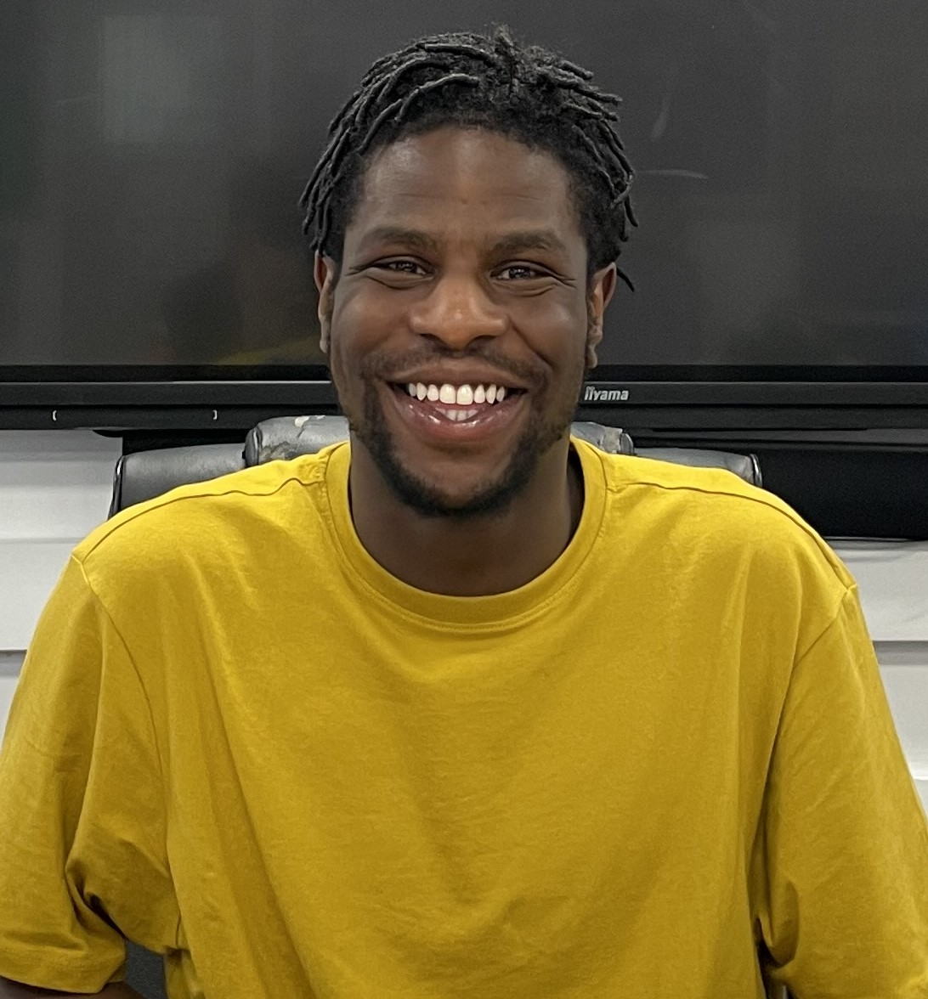

About Us
I’ve spent years working with kids and young adults who see the world differently, helping them find their confidence, build life skills, and step out of their comfort zones.
At SEN Manny Mentor, it’s all about creating a safe, encouraging space where they can grow - whether it’s tackling new challenges, learning life skills, or finding their rhythm in the world.
Experience Highlights
- EOTAS Specialist Educator & Programme Lead (Dulwich)::I’m currently leading a fully funded EOTAS (Education Other Than at School) package for a neurodivergent young person with autism, ADHD, and PDA. This involves more than mentoring — I design and deliver a bespoke education programme from the ground up, collaborating with therapists, educational psychologists, and parents to build structure, emotional safety, and long-term growth. My work includes academic planning, emotional coaching, executive functioning, and life skills — all within a highly personalised, home-based setting.
- Private SEN Mentor:Privately hired by a parent to support her autistic, ADHD, and dyslexic son through Year 10 and Year 11. I designed a system within the existing school structure to help him thrive in an environment that didn’t naturally suit his needs. Acting as his mentor, motivator, and sometimes tutor, I liaised regularly with teachers to ensure he had the emotional and academic support to stay on track. Together, we built confidence, structure, and a way of working that was truly his.
- SEN PE Teacher:Delivered dynamic sports sessions for 44 neurodivergent students aged 11–19, including football, badminton, dodgeball, and structured warm-ups. I organised inter-school football competitions and used sport to develop teamwork, confidence, and resilience. Between lessons, I led outdoor movement breaks — giving students time to reset by exploring nature, feeding ducks, or simply getting fresh air to ease transitions and improve focus. Delivered dynamic sports sessions for 44 neurodivergent students aged 11–19, including football, badminton, dodgeball, and structured warm-ups. I organised inter-school football competitions and used sport to develop teamwork, confidence, and resilience. Between lessons, I led outdoor movement breaks — giving students time to reset by exploring nature, feeding ducks, or simply getting fresh air to ease transitions and improve focus.
- Life Skills & Mindset Coach:As a life coach for neurodivergent children and young people with autism, ADHD, PDA, and anxiety, I specialise in developing key life skills and promoting long-term independence. My tailored sessions support executive functioning, emotional regulation, and social development. I help young people build essential tools such as independent living skills, time management, decision-making, and self-motivation. Each session also focuses on managing anxiety, improving resilience, and building confidence in everyday routines. This SEN life skills support is designed to prepare children and young adults to thrive both at home and in the wider world.
- Collaboration with NHS & Educational Teams:I regularly work alongside Speech & Language Therapists, Occupational Therapists, SEN Tutors, and Educational Psychologists to ensure cohesive, whole-child support.
- Drama & Mentoring Club (Bell House, Dulwich):Led creative summer workshops for neurodivergent kids, combining drama, storytelling, games, and mindset coaching to build self-expression and social skills in a joyful, pressure-free setting.
- BA in Drama & Theatre Studies (Royal Holloway, University of London):BA Drama & Theatre Studies (Royal Holloway, University of London):My training in drama supports my work with SEN children, especially in emotional expression and social communication. I use role play and storytelling to help young people with autism, ADHD, and anxiety improve confidence and connection. Acting credits include CBBC’s So Awkward: Kids Camp, Silent Witness (BBC), Professor T (ITV/Apple TV), and The Personal History of David Copperfield (FilmNation). These creative experiences help me bring energy, imagination, and adaptability to every session. 

Philosophy
No two people are the same, and that’s what makes this work so exciting. It’s all about finding what clicks—whether it’s confidence building, independence, or helping them discover their strengths. I bring creativity, warmth, and empathy to every session, making sure they feel supported and ready to take on life’s challenges.
Commitment to Growth
Parents tell me my work makes a real difference—from boosting confidence and independence to easing anxiety and helping young people thrive.
Mission Statement
Creating a safe, supportive space where neurodivergent individuals can grow into independent, confident, and resilient learners.